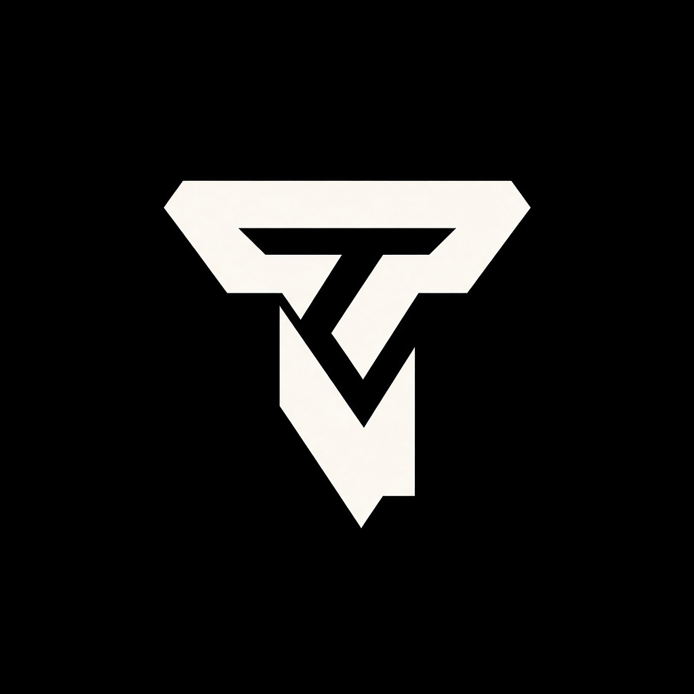

01
Arkády
Snake, Breakout, Flappy a další klasiky připravené ke spuštění během vteřiny.

TersagoPortál online · BETA
Skokni do arkádové zóny, vyzvi přátele a měj všechno na jednom místě — mobil i PC.
Herní zóna
Retro arkády, 1v1 výzvy a klasiky — spuštěné přímo v prohlížeči.
01
Snake, Breakout, Flappy a další klasiky připravené ke spuštění během vteřiny.
02
Pong a další 1v1 módy pro rychlé duely s kamarády na stejném zařízení.
03
Stejná herní zóna funguje na telefonu i počítači — ovládání se přizpůsobí.
O nás
Tersago spojuje herní zónu, služby a komunitu pod jednu značku. Cíl je jednoduchý: rychlý přístup, čistý portál a prostor, který rosteme společně.
Služby
Základ portálu je herní. Kolem něj stavíme nástroje a vrstvy, které dávají smysl.
A
Lehký front-end hub s navigací, statusem a přímým vstupem do herní zóny.
B
Prohlížečová knihovna miniher s mobilním i desktopovým ovládáním.
C
Komunita, podpora a rozšířené služby se otevírají postupně s aktualizacemi.
Komunita
Komunitní vrstva Tersago je připravená na výzvy, přátele a společné sezení v herní zóně. Přidej se a drž se aktualizací.
Vstoupit do zónyPodpora
Herní zóna běží v prohlížeči — zkuste obnovit stránku nebo jiný prohlížeč. Další kanály podpory doplníme v dalších verzích portálu.